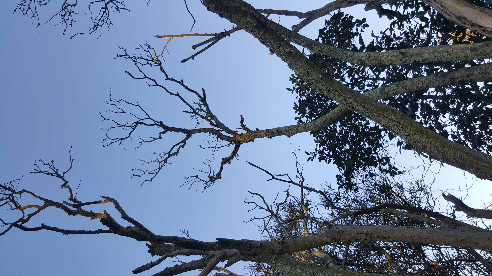
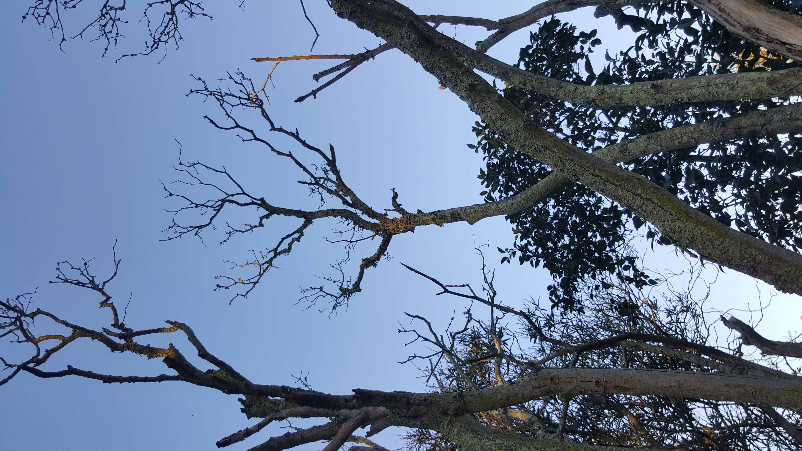

Barely into the walk I come across this Abluca in flower. These are relativly common on bordering the walkways by the beach.

Barely into the walk I come across this Abluca in flower. These are relativly common on bordering the walkways by the beach.
The waterways by the entrance to Paardevlei are filled with Brass buttons ( Cotula coronpifolia )

I reckoned to find mushrooms, I need to find undisturbed areas. And in this search I found this half dead tree playing host to wide array of foliose, crustose and even fruticose lichens.


 

Walking along the road by the Eucalyptus trees keeping my eye on the road margin I spotted these. Possibly Laccaria laccata


A bit further on I found even more. And close to them a beautiful bryophyte. This species is prolific in the area.


Meandering off the path I came across this fallen tree. The holes I suspect were made my carpenter bees. The caps yielded a spore print of the same color as the gills.


Time to go home. Table mountain is just visible behind the tree line.